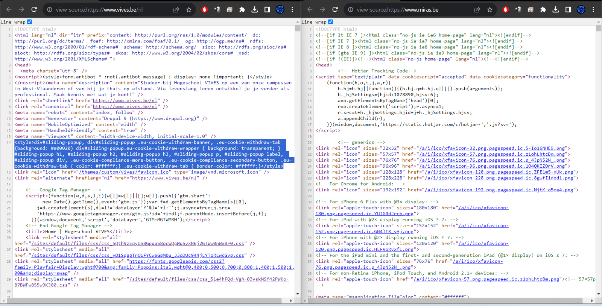
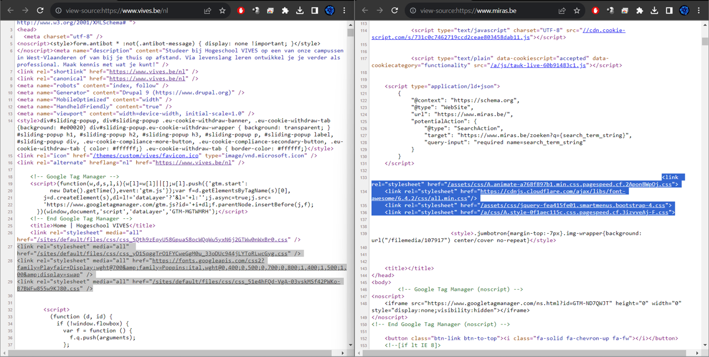

Het eerste waarneembare verschil tussen de site van Vives en die van Mira is dat Vives in hun html-code
bovenop hun css-files nog eens het <style> gebruikt.

Nog een verschil is dat de plaats van de <link> naar de css bestanden verschilt, ze staan beide in het
<head> element, maar die van Miras staat er verder in naar het document zelf.
Verder is er niet veel verschil van manier van uitvoeren behalve de lay-out.